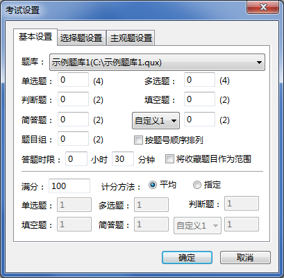
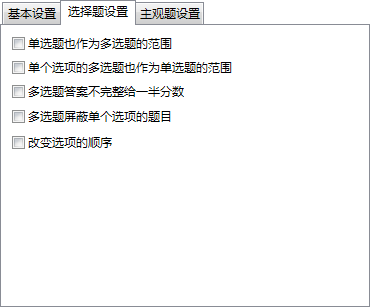
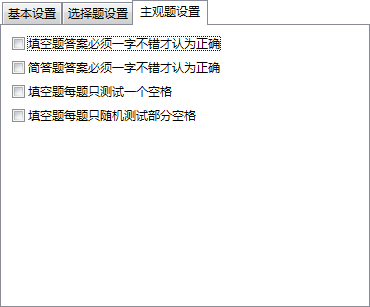
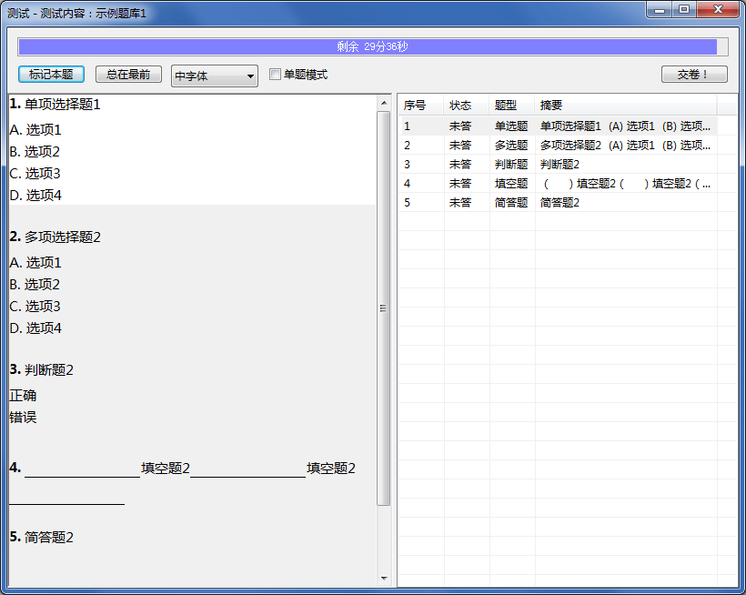
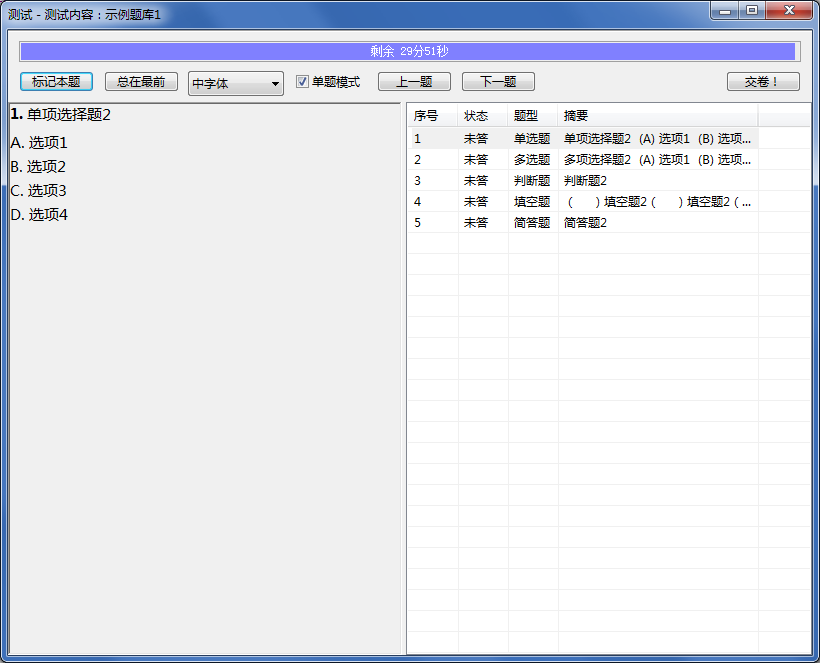
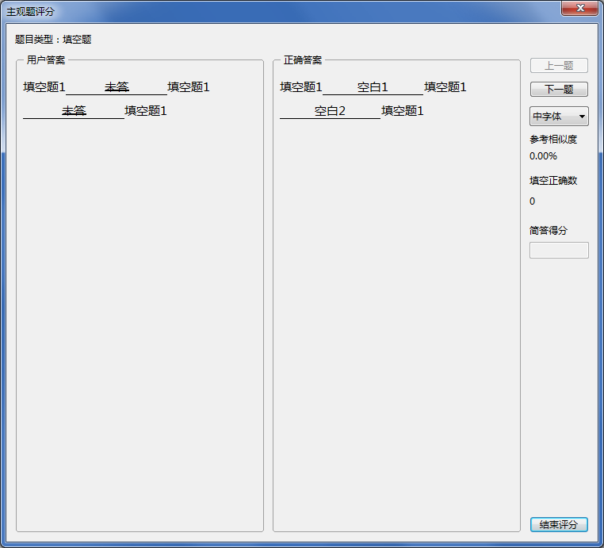
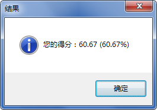
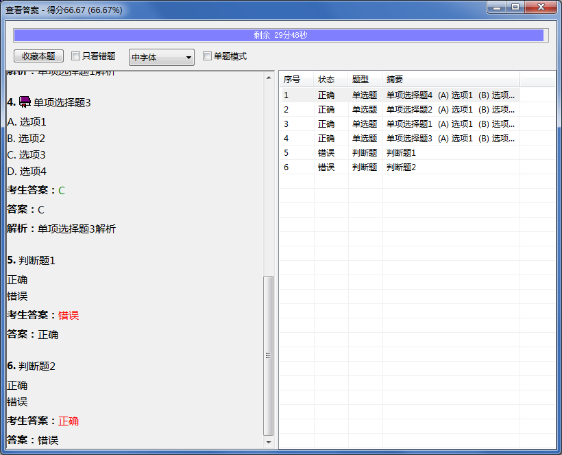

开始考试
开始考试
开始考试前，需要对考试内容及评分标准进行设置，界面如下。

可以选择当前任何一个在应用程序中打开的题库作为考试内容。
按每种类型设置题目数量，每个输入框后的括号内为可设置的最大数量（即题库中实际包含的题目数量）。
勾选后，考试时的题目顺序按照题号进行依次排列，默认类型题目与未设置题号的题目排在最后。
取消勾选后，考试时的题目顺序按照默认顺序排列。
设置答题的时间限制，若设置为0，则视为不限时间。
当有收藏题目时，此项可选，勾选后，考试范围仅限被收藏的题目，且每种类型的题目后所显示的题目数量也切换为收藏数量。
当无收藏题目时，此项不可勾选。
若勾选“平均”，则每道题目的分数相同，为“满分÷题目总数”。
若勾选“指定”，下方各输入框将变为有效，可指定每种类型题目的分数，此时“满分”设置将无效，实际满分为各题目计分之和。
 | 填空题的指定分数为“每空的分数”，其它类型题目的指定分数为“每题的分数”。 |
|---|

每个选项的含义较容易理解，不再详细解释。

若勾选“填空题答案必须一字不错才认为正确”选项，则考试结束后，评分时将自动核对填空题答案内容与正确答案是否完全一致，完全一致才得分，不完全一致则不得分；“简答题答案必须一字不错才认为正确”选项同理。
若不勾选，考试结束后需要人工对填空题或简答题进行
主观题评分。
| 此选项对题目组中的填空题、简答题也有效。 |
|---|
考试启动后，将显示如下界面

高亮显示的题目为当前题目，双击右侧列表可以快速选中题目，操作方法见下表：
表11 考试操作方法
| 当前题目类型 | 鼠标操作 | 键盘操作 |
|---|
| 全部类型 |
点击题目区域可以选中题目，选中的题目将高亮显示。
|
Ctrl+Tab：选中后一道题目；
Ctrl+Shift+Tab：选中前一道题目。
|
单选题
多选题 |
单击选项将选中选项，选中的选项将加粗显示。
|
A~H：选中A~H选项。
|
| 判断题 |
单击下方“正确”“错误”选项，选中者将加粗显示。
|
Y/V/T：正确；
N/X：错误。
|
| 填空题 |
点击下划线区域进入编辑模式，可输入答案，点击其他区域退出编辑模式。 |
Ctrl+Tab：选中下一个空白；
Ctrl+Shift+Tab：选中上一个空白；
Esc：在编辑模式中，退出编辑。
|
| 简答题 |
点击题干后空白区域进入编辑模式，可输入答案，点击其他区域退出编辑模式。 |
Esc：在编辑模式中，退出编辑。
|
操作字体下拉框可以改变考试界面的字体大小，有4种大小可供选择。
题目列表中显示题目的当前状态。未作答的题目显示“未答”；作答但答案不确定的题目可以进行标记，将显示“标记”；作答且未标记的题目状态为空白。当顶端的倒计时条走完后，考试结束，时间走完前也可以提前交卷。
当勾选“单题模式”时，一次仅显示一道题目，可通过“上一题”“下一题”切换，也可用快捷键Ctrl+Tab、Ctrl+Shift+Tab切换。

| 在考试中，无法对文字进行选中和复制。 |
|---|
交卷后，若未勾选“填空题答案必须一字不错才认为正确”或“简答题答案必须一字不错才认为正确”选项，则进入如下界面进行主观题人工评分。

在为填空题评分时，
点击各空白，当答案上带有删除线时，此空错误；否则此空正确；在为简答题评分时，若计分方式为“
平均”，可根据简答题作答的优劣程度给出百分制的评分；若计分方式为“
指定”，可直接按指定的简答题分数评分。
“参考相似度”为考生答案与正确答案进行对比后得出的相似度，仅供评分参考用。

最终得分将分别按实际得分与百分制得分显示。
查看分数显示完毕后，进入查看答案界面。

显示考生答案时将用不同颜色标示正确与否：完全正确显示绿色，部分正确显示橙色，不正确显示红色。
勾选“只看错题”，将只显示答案不完全正确的题目；点击“收藏本题”可将当前题目收藏至收藏夹内。
在此界面下，可以用鼠标对文字内容进行选中、复制。
本次测试结束后，还可以多次重复测试相同题目。
GX Software 2020-2021
V2.0